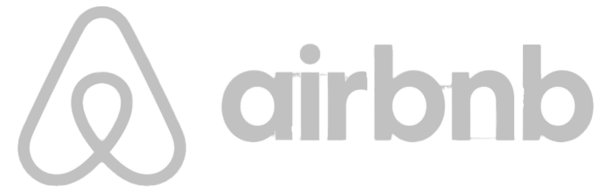

2nd ANNUAL ICT FOR
NEEDS CONFERENCE 2023
The ICT for NEEDS conference promotes inter-cultural and academic activities between universities in the south-south region. it brings different intellectual students to share ideas and learn from each other.
Please contact via Email for any further questions about ICT FOR NEEDS 2023!
Nacossict4needs@gmail.comICT for NEEDS conference 2023 Logo
The logo of ICT FOR NEEDS conference was design and used along side the NACOSS logo for the conference for the Nigerian Association of Computer Science students south-south zone.
See the past ICT FOR NEEDS CONFERENCE.
Take a look at the past two Nacoss south-south ICT FOR NEEDS Conference.


Partner
- 